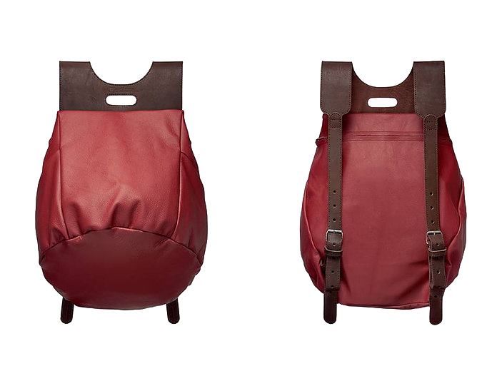
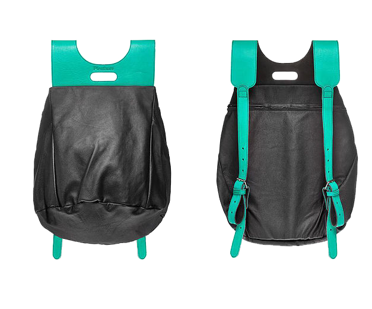
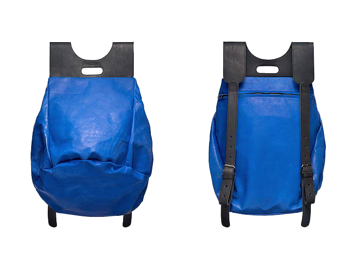
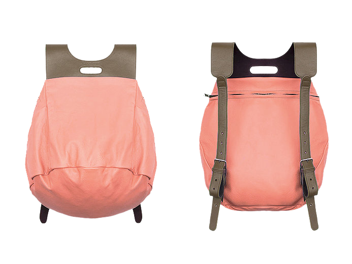

Круглый зеленый плод размером с большое яблоко. Можно есть с кожицей и мелкими семечками. Несколько твердовата, поэтому желательно порезать на ломтики. На вкус не очень сладкая. В Таиланде потребляется недозревшим (когда мякоть фрукта еще зеленая и более твердая) с солью, сахаром и специями.

Помело (Сом-о)
Самая близкая аналогия- это апельсин и грейпфрут, только больше, сочнее и слаще. Обладает толстой кожей, которую надо чистить. Некоторые сорта имеют много косточек, некоторые мало, но все сорта вкусные и сочные.

Саподилла (Ламут)
Коричневые с золотистым оттенком плоды, похожие на киви, с такой же тонкой кожурой, которую можно снять ножом. Мякоть сладкая, напоминает вкус компота из сухофруктов, сушеную грушу или хурму. Внутри есть несколько косточек. Незрелые плоды имеют вяжущий вкус, перед покупкой проверьте на мягкость. Часто используется для сервировки блюд из-за красивого коричневатого оттенка мякоти.

Мангостин (Монгкут)
Этот очень популярный и излюбленный фрукт не только местных жителей, но и многочисленных туристов, называют «Королевой фруктов». Коричнево-сиреневые плоды, размером с мандарин. Надрежьте толстую кожуру ножом и очистите руками. Внутри белая мякоть с дольками, как у мандарина. В некоторых дольках может быть косточка. И еще правило мангостина: чем больше долек в плоде, тем меньше в нем семечек. Кисло-сладкий вкус.

заказ №384
17.200руб
10.790руб
в наличии
габариты: 42x30x60
* доставка по Москве и мос. области БЕСПЛАТНА в день заказа
* по всем вопросам телефон горячей линии: 8 985 453 43 56